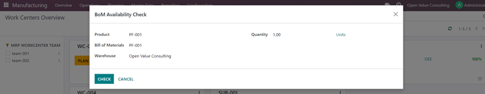
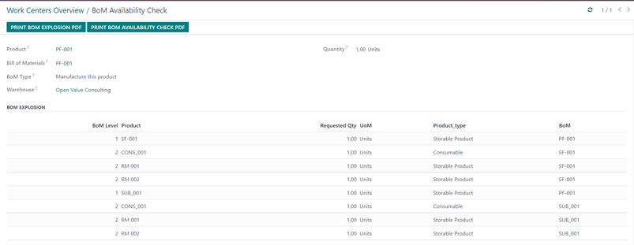
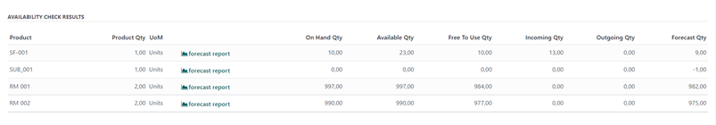

BOM AVAILABILITY CHECK
The “Bom Availability Check” tool aims to check the feasibility of a production quantity based on the projected stock availability at all level of the Bill of Materials.
The tool consists of two main sections:
· BOM explosion
· Availability Check
Two printouts are available also:
· BoM Explosion report to provide an overview of all BoM structure
· Availability Check report to list all quantities figures related to a component’s replenishment
In detail, we have as follows:
Input data
|  |
· Finished product
· Its bill of materials
· The production warehouse
· Requested production quantity
Outcome:
BOM Explosion section
|  |
BOM is exploded till the final level (multi-level BoM explosion) and the requested quantity is calculated for all the components.
Availability Check Result section
|  |
All components’ requirements are summarized, i.e. components in different BoM level are listed in only one row with all its requirements summarized. The storable products are reported only.
For each item the following stock quantities are provided for the selected warehouse:
· Requested Quantity based on BOM explosion
· On hand Quantity
· Available Quantity, i.e. the projected stock quantity
· Free to Use Quantity, i.e. the on hand stock minus the reserved one
· Incoming Quantity, i.e. all incoming goods movement are summarized
· Outgoing Quantity, i.e. all issue goods movements are taken into account
· Forecast Quantity, achieved as the “Free to Use” quantity minus requested quantity
The forecast report is available also for checking the projected stock over the time and to trigger a manual replenishment also.
Component’s shortage is pointed out in red color, i.e. the forecast quantity is negative so the requested production is not feasible and procurement has to be activated.